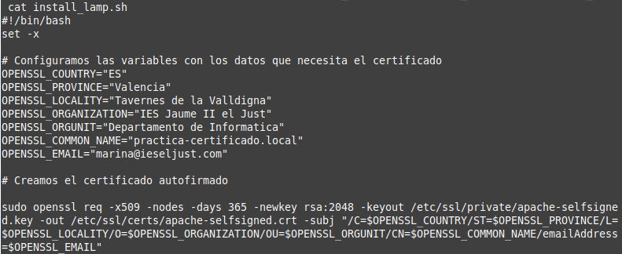

Creación y configuración de un certificado SSL/TLS autofirmado en Apche
Creación del certificado autofirmado
Para crear el certificado autofirmado utilidadopenssl usaremos el siguiente comando:
sudo openssl req -x509 -nodes -days 365 -newkey rsa:2048 -keyout /etc/ssl/private/apache-selfsigned.key -out /etc/ssl/certs/apache-selfsigned.crt
Introducimos unos datos que se añadirán al certificado.
En mi caso he añadido los siguientes:

Automatizar la creación de un certificado autofirmado
Crearemos un script bash donde especificaremos los argumentos que le pasaremos al comando anterior a través del parámetro -subj.
#!/bin/bash
set -x
# Variables con los datos del certificado
OPENSSL_COUNTRY="ES"
OPENSSL_PROVINCE="Valencia"
OPENSSL_LOCALITY="Gandia"
OPENSSL_ORGANIZATION="IES Jaume II el Just"
OPENSSL_ORGUNIT="Departamento de Informatica"
OPENSSL_COMMON_NAME="practica-certificado.local"
OPENSSL_EMAIL="marina@ieseljust.com"
# Creación del certificado
sudo openssl req -x509 -nodes -days 365 -newkey rsa:2048 -keyout /etc/ssl/private/apache-selfsigned.key -out /etc/ssl/certs/apache-selfsigned.crt -subj "/C=$OPENSSL_COUNTRY/ST=$OPENSSL_PROVINCE/L=$OPENSSL_LOCALITY/O=$OPENSSL_ORGANIZATION/OU=$OPENSSL_ORGUNIT/CN=$OPENSSL_COMMON_NAME/emailAddress=$OPENSSL_EMAIL"

Script
Puedes descargar el script haciendo clic en el siguiente botón:
Configuración del host virtual con SSL/TSL en el servidor Apache
Copiamos el archivo "default-ssl.conf", que es la configuración del VirtualHost, donde habilitaremos el tráfico http y lo editamos.
- sudo cd /et/apache2/sites-available
- sudo cp default-ssl.conf certificado-ssl.conf
- sudo nano certificado-ssl.conf
<VirtualHost *:443>
#ServerName practica-certificado.local
DocumentRoot/var/www/html
DirectoryIndex index.php index.html
SSLEngine on
SSLCertificateFile /etc/ssl/certs/apache-selfsigned.crt
SSLCertificateKeyFile /etc/ssl/private/apache-selfsigned.key
</VirtualHost>
-
Habilitaremos el VirtualHost que acabamos de configurar
- sudo a2ensite certificado-ssl.conf

- sudo a2ensite certificado-ssl.conf
-
Habilitaremos el módulo SSL en Apache y reiniciaremos el servicio
- sudo a2enmod ssl
-
sudo systemctl restart apache2

-
sudo systemctl status apache2

-
Copiamos y editamos el VirtualHost de HTTP para que redirija todo el tráfico a HTTPS
- sudo cd /et/apache2/sites-available
- sudo cp 000-default-ssl.conf 000-certificado-ssl.conf
- sudo nano 000-certificado-ssl.conf
<VirtualHost *:80>
#ServerName practica-certificado.local
DocumentRoot/var/www/html
#Redirige alpuerto 443 (HTTPS)
RewriteEngineOn
RewriteCond%{HTTPS} off
RewriteRule^ https://%{HTTP_HOST}%{REQUEST_URI} [L,R=301]
</VirtualHost>
-
Habilitaremos el módulo rewrite y reiniciamos en servicio
- sudo a2enmod rewrite
-
sudo systemctl restart apache2

-
sudo systemctl status apache2

-
Nos aseguramos de que el puerto 443 esté abierto en las reglas del firewall para permitir el trafico hhtps.

-
Modificamos el fichero /etc/hosts
- sudo nano /etc/hosts

- sudo nano /etc/hosts
Una vez hecho todo esto, abriremos un navegador y accederemos al nombre de nuestro dominio. En mi caso será:
https://practica-certificado.local